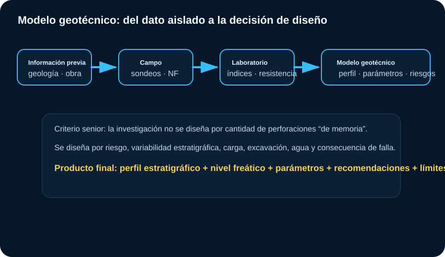
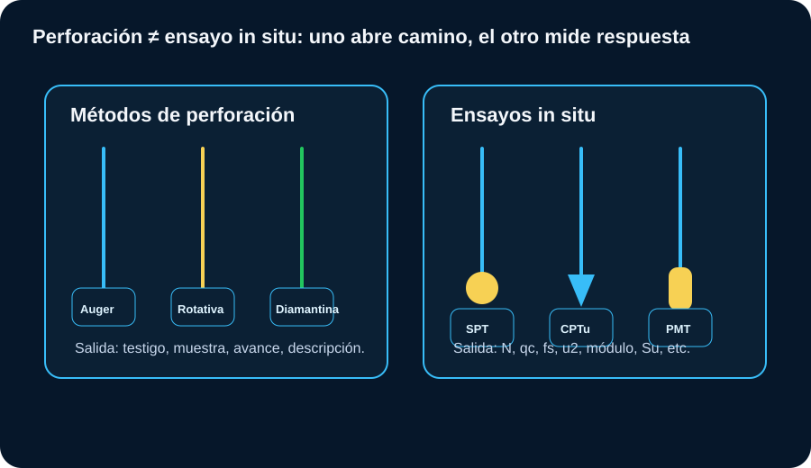
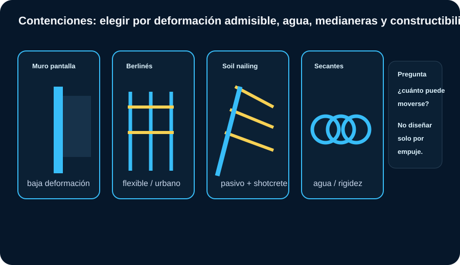
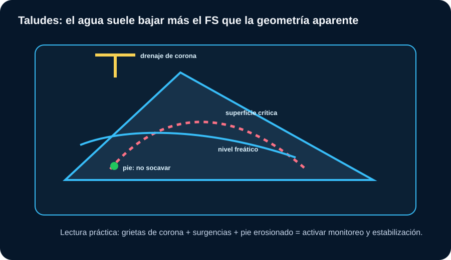

Geotecnia Aplicada
Este módulo separa con claridad investigación del subsuelo, cimentaciones, contenciones, taludes e instrumentación. Las ramas se conectan por parámetros, pero no se mezclan como si fueran el mismo problema.
Investigación del subsuelo
El objetivo es construir un modelo geotécnico suficiente para el riesgo del proyecto.

Cómo leer: la campaña debe cerrar incertidumbres relevantes: estratigrafía, agua, resistencia, deformabilidad, agresividad y riesgos.
Fases y decisiones
| Fase | Qué se busca | Salida útil |
|---|---|---|
| Factibilidad | Riesgos mayores, viabilidad, restricciones. | Mapa de amenazas y necesidad de investigación. |
| Anteproyecto | Comparar alternativas. | Parámetros preliminares y solución probable. |
| Proyecto | Diseñar con parámetros representativos. | Perfil, NF, parámetros, recomendaciones y límites. |
| Construcción | Verificar hipótesis. | Control geotécnico, instrumentación y cambios. |
| Operación | Seguimiento de comportamiento. | Auscultación, mantenimiento y gestión de riesgos. |
Sistemas de perforación y ensayos in situ
La perforación obtiene acceso y muestras; los ensayos in situ miden respuesta del terreno.

Corrección clave: SPT no es sistema de perforación; es un ensayo dentro de una perforación. Diamantina sí es método de testificación/perforación, especialmente en roca.
Lectura técnica
| Método | Entrega | Uso / cuidado |
|---|---|---|
| Auger / helicoidal | Avance rápido, muestra alterada. | Útil en suelos sobre NF; pobre para muestras inalteradas. |
| Lavado | Avance con fluido. | Puede alterar finos y lectura estratigráfica. |
| Rotativa | Avance en suelos duros/roca blanda. | Seleccionar herramienta y fluido según material. |
| Diamantina | Testigo de roca/material cementado. | Permite RQD, recuperación y descripción estructural. |
| SPT | N, muestra alterada. | Corregir energía, profundidad, diámetro, varillaje y nivel freático según uso. |
| CPTu | qc, fs, u2 continuo. | Excelente para estratigrafía y correlaciones; necesita calibración local. |
Esfuerzos efectivos
Toda decisión de resistencia y deformabilidad depende de σ’, no sólo de carga total.
Lectura práctica
| Concepto | Qué controla | Riesgo si se ignora |
|---|---|---|
| σ total | Peso propio + cargas. | Sobrestimar resistencia si hay presión de poros alta. |
| u presión de poros | Reduce esfuerzo efectivo. | Inestabilidad, levantamiento de fondo, falla rápida. |
| σ’ efectivo | Resistencia friccional y deformación. | Diseño inconsistente de taludes, cimentaciones y muros. |
| Δσ por cargas | Asentamientos y consolidación. | No detectar estratos compresibles profundos. |
Calculadora σ, u, σ’
Cimentaciones
Elegir cimentación es balancear carga, suelo, asentamiento, agua y constructibilidad.
| Solución | Cuándo suele convenir | Parámetros críticos | Alertas |
|---|---|---|---|
| Zapatas | Cargas moderadas y estrato competente somero. | qadm, asentamiento total/diferencial, Df, NF. | Rellenos, suelos colapsables, arcillas blandas o expansivas. |
| Plateas | Cargas repartidas, control de diferenciales, suelos heterogéneos moderados. | Módulo de balasto/deformabilidad, rigidez estructural. | No “borra” asentamientos; los redistribuye. |
| Pilotes excavados | Estrato competente profundo o cargas altas. | Fuste, punta, integridad, lodos, limpieza de fondo. | NF alto, colapso de perforación, estrato blando intermedio. |
| Pilotes hincados | Control por rechazo/energía, producción repetitiva. | Capacidad axial, vibración, ruido, set-up. | Daño a vecinos, rechazo falso, licuación local. |
| Micropilotes | Recalce, espacios reducidos, refuerzos. | Inyección, adherencia, control de ejecución. | Costos, inclinación, control de lechada. |
| Mejoramiento | Cuando se puede tratar el terreno y evitar cimentación profunda. | Objetivo: densificar, drenar, cementar o reemplazar. | Necesita control de calidad y verificación posterior. |
Sistemas de contención y entibación
En excavaciones urbanas, la deformación admisible puede controlar más que la falla global.

Cómo elegir: profundidad, agua, proximidad de estructuras, rigidez requerida, espacio para anclajes, secuencia y monitoreo.
Criterios de selección
| Sistema | Ventaja | Cuidado principal |
|---|---|---|
| Muro pantalla | Rígido, apto con agua y excavaciones profundas. | Juntas, verticalidad, lodos, costo y logística. |
| Berlinés | Flexible, modular, económico en ciertos suelos. | Deformaciones, agua, pérdida de suelo entre perfiles. |
| Secantes/tangentes | Buen control de ingreso de agua y suelo. | Desviaciones y continuidad entre pilotes. |
| Anclajes activos | Reduce desplazamientos y momentos. | Longitud libre/bulbo, propiedad vecina, pruebas de carga. |
| Puntales | No invaden predios vecinos. | Interferencia constructiva, precarga, pandeo y secuencia. |
| Soil nailing | Bueno para cortes por etapas. | Necesita deformación para movilizar; drenaje superficial esencial. |
Empuje activo Rankine preliminar
Estabilidad de taludes
Separada de contenciones: aquí el problema principal es la masa inclinada y su mecanismo de falla.

Cómo leer: geometría, presión de poros, resistencia al corte y erosión del pie gobiernan el FS. El drenaje suele ser la medida más eficiente.
Señales y acciones
| Señal | Lectura probable | Acción |
|---|---|---|
| Grieta en corona | Inicio de movimiento o tracción. | Restringir carga, sellar infiltración, monitorear apertura. |
| Surgencia de agua | Presión de poros alta o flujo preferencial. | Drenaje superficial/profundo, alivio de presión. |
| Pie erosionado | Pérdida de confinamiento. | Protección de pie, berma, muro de pie o enrocado. |
| Deformación progresiva | Falla en desarrollo. | Instrumentación, reducción de carga, estabilización por etapas. |
| FS bajo | Margen insuficiente. | Reperfilado, drenaje, refuerzo, bermas o contención local. |
Instrumentación y semáforo geotécnico
Instrumentar no es poner sensores: es definir umbrales, frecuencia, responsables y respuesta.
| Instrumento | Mide | Uso típico | Alerta técnica |
|---|---|---|---|
| Piezómetro | Presión de poros / NF. | Taludes, excavaciones, consolidación. | Subida rápida de u reduce σ’ y FS. |
| Inclinómetro | Desplazamiento lateral en profundidad. | Contenciones, taludes, pantallas. | Identifica plano de movimiento y velocidad. |
| Prismas topográficos | Movimientos superficiales. | Medianeras, coronas, estructuras vecinas. | Velocidad creciente pesa más que valor aislado. |
| Placas de asentamiento | Asentamiento vertical. | Rellenos, terraplenes, precargas. | Comparar con consolidación estimada y tasa. |
| Celdas de carga | Carga en anclajes/puntales. | Excavaciones profundas. | Pérdida o aumento anómalo exige revisión. |
Semáforo recomendado: verde = comportamiento dentro de predicción; amarillo = tendencia o valor cercano al umbral; rojo = superar umbral o acelerar velocidad de movimiento. El plan debe existir antes de excavar.